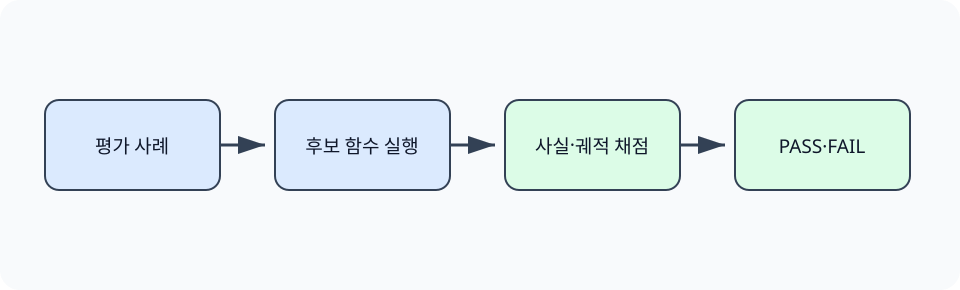

한경 KDT · LLM Agent 개발 & 바이브코딩 · Part 7 · 프로덕션 엔지니어링 · Ch 33 · CI/CD와 배포 운영
단위 테스트가 모두 통과해도 에이전트의 답변에서 근거가 빠지거나 도구 호출이 늘 수 있습니다. 이런 변화는 함수 반환값만 검사하는 테스트로 찾기 어렵습니다. 이 절에서는 Ch15의 Groundedness와 Ch29의 궤적 기준을 후보 함수의 실제 출력에 적용해, 품질 저하가 생긴 변경을 종료 코드 1로 중단합니다.
실습은 네 평가 사례를 후보 함수에 다시 입력합니다. 정상 코드에서는 Groundedness 1.00과 추가 호출 0회를 확인하고, 임시 복사본의 답변과 궤적 코드를 손상했을 때 두 기준이 FAIL로 바뀌는지 비교합니다.
Ch15에서 근거성 평가와 기준선을, Ch29에서 최종 답뿐 아니라 도구 호출 궤적을 확인했습니다. 앞 절에서 CI가 종료 코드로 다음 단계 진행 여부를 결정한다는 점을 배웠습니다. 이 절은 두 평가 기준을 그 종료 코드에 연결합니다.
인쇄소는 새 인쇄물을 승인된 견본과 나란히 놓고 색과 위치를 각각 검사합니다. 평가 회귀도 승인된 기준선과 현재 결과를 비교하되, 답의 근거성과 도구 호출 효율을 한 점수로 섞지 않습니다.
회귀(regression)는 새로운 변경 뒤에 이전에 만족하던 동작이나 품질 기준이 깨지는 현상입니다. 단위 테스트가 함수의 정해진 출력을 검사한다면 평가 회귀는 Groundedness, 궤적의 추가 도구 호출 수처럼 확률적 시스템의 품질과 비용을 검사합니다. 기준선(baseline)은 비교할 이전 결과이며, 허용치(tolerance)는 실행 변동을 고려해 받아들일 범위입니다. Ch15의 생성 품질과 Ch29의 궤적 효율을 한 점수로 합치면 원인을 찾기 어려우므로 두 검사를 분리해 표시하고, 모두 통과할 때만 전체 종료 코드 0을 반환합니다.
앞 절에서 CI의 작업과 종료 코드를 확인했습니다. 여기서는 테스트 단계 뒤에 evaluate_regression.py를 추가합니다. 스크립트는 커밋된 점수를 읽는 데 그치지 않고 run_candidate()를 실행해 답변과 도구 목록을 새로 계산합니다.
평가 회귀 검사는 현재 결과를 저장된 기준선과 비교해 배포 가능 여부를 종료 코드로 바꿉니다. 이 예제는 근거성 점수와 추가 도구 호출 수를 함께 검사합니다. 임시 복사본에서 답과 도구 호출을 악화시키면 평가 스크립트가 0이 아닌 코드를 반환하고, 원래 구현에서는 0을 반환합니다.
기준선은 영원한 정답이 아니라 승인된 비교점입니다. 질문 집합이나 평가 방식이 바뀌면 점수 변화가 모델 회귀인지 평가 변경인지 분리해야 합니다. 평균 점수만 보면 특정 중요 질문의 큰 하락이 가려질 수 있으므로 핵심 사례별 하한과 전체 집계를 함께 둡니다.

기준선 변경과 모델 변경이 동시에 일어나면 실패 원인을 구분하기 어렵습니다. 기준선은 별도 리뷰로 갱신하고, 같은 평가 입력에서 후보 변경만 비교합니다.
공개 고정 자료에서 기준선과 현재 결과를 읽습니다. Groundedness는 기준선보다 0.02를 초과해 낮아지지 않아야 하고, 추가 도구 호출 수는 기준선 이하여야 합니다. 정상 자료로 성공을 확인한 뒤 임시 폴더에서 두 값을 나쁘게 바꾸어 실제 회귀 검사 프로세스가 실패하는지 확인합니다.
준비된 Python 3.12 노트북에서 첫 셀부터 Shift+Enter로 하나씩 실행합니다. 안내한 결과를 먼저 확인하고 지정한 값 하나를 바꿔 비교합니다. 문서를 사용하는 실습은 파일 묶음이 필요합니다. 노트북과 실습 파일 함께 받기 · 처음 실습하는 방법. 전체 코드 복사에는 아래의 Before/After 셀도 포함됩니다. 이 HTML에서는 코드를 실행하지 않습니다.
Ch15와 Ch29에서 배운 서로 다른 평가 기준을 하나의 종료 코드로 연결합니다.
첫 셀의 Path 탐색은 어느 상위 폴더에서 열어도 Ch33의 pyproject.toml을 기준으로 실습 폴더를 찾습니다. 뒤의 subprocess.run(..., cwd=lab, capture_output=True)은 명령을 별도 프로세스로 실행하고 화면 문구와 종료 코드를 함께 반환합니다. 이 보조 코드는 CI를 흉내 내는 공통 실행 경계이며, 각 절의 판정은 다음 셀에서 해당 명령의 실제 반환값을 읽어 결정합니다.
from pathlib import Path
import json, subprocess, sys
lab = next((p for p in [Path.cwd(), *Path.cwd().parents] if p.name == "ch33-cicd" and (p / "pyproject.toml").is_file()), Path("labs/part7/ch33-cicd")).resolve()
baseline = json.loads((lab / "data/regression-baseline.json").read_text())
print(baseline){'source': ['Ch15', 'Ch29'], 'source_files': {'labs/part4/ch15-evaluation-advanced/data/evaluation-cases.json': 'dc48b1bc49d26d511ca2141b102cefbae1b395a06faaa8d21a61c2174ec3b2d1', 'labs/part6/ch29-agent-evaluation/notebooks/04-운영-지표와-Ch18-궤적-비교.ipynb': '71fa56efb956b5218732c75bcf030ccf401e2335217d6b23fbf6c2ff2322d93a'}, 'note': '원본의 평가 항목을 CI 연결 연습에 맞게 축약한 교육용 기준선이며 원본 측정값 발췌가 아닙니다.', 'groundedness': 0.9, 'trajectory_extra_calls': 1, 'cases': 4}
평가 회귀 검사는 현재 결과를 저장된 기준선과 비교해 배포 가능 여부를 종료 코드로 바꿉니다. 이 예제는 근거성 점수와 추가 도구 호출 수를 함께 검사합니다. 임시 복사본에서 답과 도구 호출을 악화시키면 평가 스크립트가 0이 아닌 코드를 반환하고, 원래 구현에서는 0을 반환합니다.
result = subprocess.run([sys.executable, "scripts/evaluate_regression.py"], cwd=lab, text=True, capture_output=True)
print(result.stdout.strip())
print("exit_code=", result.returncode)
assert result.returncode == 0groundedness=1.00 required=0.90 trajectory_extra_calls=0 allowed=1 groundedness: PASS trajectory: PASS exit_code= 0
확인할 점 — 정상 자료의 두 PASS와 종료 코드 0을 확인합니다. 임시 실패 자료에서는 두 FAIL과 0이 아닌 종료 코드가 함께 나오는지 비교합니다.
실패 자료는 첫 사례의 필수 사실을 답변에서 제거하고 두 번째 사례의 실제 궤적에 불필요한 검색 호출 두 번을 추가합니다. 평가 함수가 원자료를 다시 채점하면 Groundedness와 추가 호출 수가 모두 기준을 벗어납니다. 두 항목은 각각 FAIL로 출력되고 프로세스는 종료 코드 1을 반환합니다. 수정 단계에서는 같은 평가 함수를 원래 네 사례에 실행해 종료 코드 0을 확인합니다. 네 사례의 고정 자료는 연결 방법을 배우기 위한 것이며 실제 모델 전체의 품질을 대표하지 않습니다.
앞의 실행 예제를 실행한 같은 노트북에서 Before 다음 After 순서로 실행합니다. 출력은 실제 실행 결과입니다.
임시 저장소에 Groundedness와 추가 호출 수가 모두 나빠진 현재 결과를 둡니다.
import tempfile, shutil
with tempfile.TemporaryDirectory() as temp:
t = Path(temp)
shutil.copytree(lab / "scripts", t / "scripts")
shutil.copytree(lab / "data", t / "data")
source = (lab / "cicd_demo.py").read_text()
source = source.replace("7권까지 14일", "8권까지 10일")
source = source.replace("return responses[qid], tools", "return responses[qid], tools + ['retrieve', 'retrieve']")
(t / "cicd_demo.py").write_text(source)
failed = subprocess.run([sys.executable, "scripts/evaluate_regression.py"], cwd=t, text=True, capture_output=True)
print(failed.stdout.strip(), "exit_code=", failed.returncode)
assert failed.returncode != 0groundedness=0.75 required=0.90 trajectory_extra_calls=8 allowed=1 groundedness: FAIL trajectory: FAIL exit_code= 1
기준을 만족하는 결과로 바꾸면 두 검사가 모두 통과합니다.
기준선은 영원한 정답이 아니라 승인된 비교점입니다. 질문 집합이나 평가 방식이 바뀌면 점수 변화가 모델 회귀인지 평가 변경인지 분리해야 합니다. 평균 점수만 보면 특정 중요 질문의 큰 하락이 가려질 수 있으므로 핵심 사례별 하한과 전체 집계를 함께 둡니다.
with tempfile.TemporaryDirectory() as temp:
t = Path(temp)
shutil.copytree(lab / "scripts", t / "scripts")
shutil.copytree(lab / "data", t / "data")
shutil.copy(lab / "cicd_demo.py", t / "cicd_demo.py")
passed = subprocess.run([sys.executable, "scripts/evaluate_regression.py"], cwd=t, text=True, capture_output=True)
print(passed.stdout.strip(), "exit_code=", passed.returncode)
assert passed.returncode == 0groundedness=1.00 required=0.90 trajectory_extra_calls=0 allowed=1 groundedness: PASS trajectory: PASS exit_code= 0
네 사례가 통과했다는 결과는 네 사례에 포함되지 않은 질문의 품질을 설명하지 않습니다. 사례와 기준선을 바꾸는 PR에서는 제품 코드 변경과 분리해 검토하고, 기준을 낮춘 이유와 사람 검토 결과를 함께 남깁니다.
다음 학습과 이어지는 지점 — 다음 절은 평가를 통과한 코드를 Docker 이미지로 만들고, 정확한 이미지 ID를 배포 기록에 남깁니다.
현재 변경과 비교할 이전의 승인된 평가 결과입니다.
하나는 답변의 근거 충실도이고 다른 하나는 실행 궤적의 효율이므로 실패 원인과 대응이 다릅니다.
모델 평가가 실행마다 조금 달라질 수 있어 의미 없는 변동과 실제 저하를 구분하기 위해서입니다.
평가 기준을 약화한 것인지, 승인된 개선 결과를 반영한 것인지 리뷰해야 합니다.